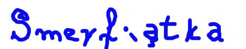
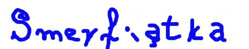
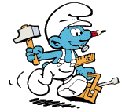
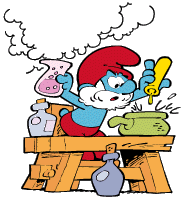

Web Design Team prezentuje:
hax0red www.chelmnet.pl alias www.nsm.pl /* Neither Suck More */
[root@serwer /tmp]# id
uid=0(root) gid=0(root)
|
 Glownym celem naszej firmy jest objecie zasiegiem calej Polski poludniowej bez zadnego wkladu w rozwoj sieci, super szybkim kablem zwanym koncentryk (sami niewiemy co to jest, zapewne cos zwiazane z koncertowaniem). Nasza firma, dzialajaca od stycznia 1995 roku jako provider oferuje najwolniejszy dostep do sieci Internet. Swoim zasiegiem obejmuje coraz wieksze tereny Trojmiasta. Szczegolnie ciekawym rejonem jest osiedle Chelm, ktore uznajemy za glowne zrodlo naszego zysku. Docelowo chcemy wybudowac w³asna siec szkieletowa (w piwnicy mamy juz przygotowane 714 szkieletow - klienci ktorzy chcieli zrezygnowac z naszych uslug ;)) obejmujaca cale Trojmiasto. W dniu dzisiejszym siec Net Sat Media jest podlaczona do sieci Internet laczami Internetowymi trzech zaleznych operatorow. Laczna przepustowosc wynosi 13 kbps. Mamy niestety wielu wrogow - szczegolnie burze, powodzie, trzesienia ziemi, ataki ufo, tajne sluzby KGB kradnace nam kable, i uzytkownicy, ktorzy ciagle sie nas czepiaja, ze siec dziala za wolno lub ze wogle nie dziala. Tak naprawde jestesmy kozlem ofiarnym ale zawsze mamy wymowke ;-). Wina nigdy nie lezy po naszej stronie. W sklad sieci wchodza super serwery ze stacji kosmicznej MIR, rowery, oraz inne niezawodne urzadzenia markowych firm takich jak No_NAME (made in taiwan), dzieki ktorym nasz klient jest zawsze wkurwiony. Internet udostepniamy glownie za pomoca sygnalow swietlnych, a w czasie awari mamy grupe Murzynow, ktorzy komunikuja sie za pomoca znakow dymnych, co poprawia transfer do 1kb/h. Lacza obslugiwane sa poprzez access rowery Total Crash Hub System - najnowoczesniejsze urzadzenia umozliwiajace wysoka awaryjnosc ³aczami komutowanymi oraz stalymi kablowymi. Lacza stale zestawiane sa wbrew zyczenia klienta - predkosci do 10B/s. Obecnie bardzo chcemy wprowadzic super us³uge PRO90 gdzie w ramach awaryjnosci sieci dajemy za doplata 300zl modem, ktory osiaga zawrotna predkosc 16600bps, abonament takiej us³ugi bedzie wynosic tylko 1000zl tygodniowo!

O bardzo zawodnym poziomie swiadczonych przez nas uslug oraz bardzo wolnym i nigdy nie
reagujacym na awarie i pomoc dla klienta serwisie swiadczy lista ponad 500 klientow,
ktorzy dzwonia i sla majle ze skargami. Rownie niska ocene otrzymalismy od szerokiej
grupy uzytkownikow Internetu (w szczegolnosci urzytkownikow ChelmNet'u, ktorych
caly czas robimy w chuja). Jestesmy monopolistami i bardzo cwanie to wykorzystujemy.
Kochamy zlewac naszych klientow, nigdy nie odpowiadamy na telefony, mejle,
sms'y, posty na forum, lubimy takze zamykac sie w biurze - naszej siedzibie
gdzie krecimy filmy porno.
Wiceprezes |
Smerfiatka ;-) /* jesce tu wroocimy ;P */
Strone sponsoruje literka: H oraz liczby 3, 1, 337.